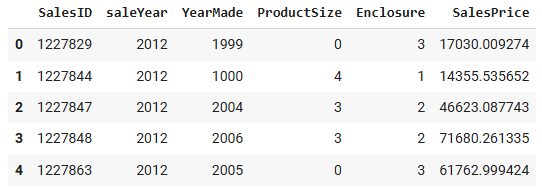
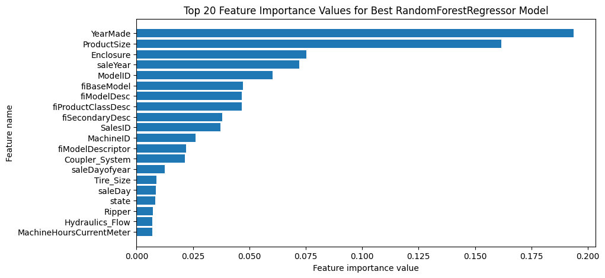

Predicting the Sale Price of Bulldozers
Objectives:
- To predict the future sale price of bulldozers, given its characteristics and previous samples
- To build and train a model using a random forest regressor with time-series data
- To tune hyperparameters using RandomizedSearchCV
Steps:
- Data pre-processing
- Import data and parsing dates
- Sort dataframe by saledate
- Add datetime parameters for saledate column
- Convert string to categories
- Fill missing values
- Turn categorical variables into numbers
- Split data into train/validation sets
- Building a model
- Build a machine learning model using random forest regressor
- Training a model
- Train a model using trained dataset
- Model evaluation
- Evaluate a model with root mean squared log error (RMSLE) metric
- Tuning hyperparameters
- Tune hyerparameters with RandomizedSearchCV
- Train a model with the best hyperparamters
- Deployment
- Make predictions on test data
- Extract Feature Importance
Outcomes:
Prediction the sale price of bulldozers

Top of feature importance
